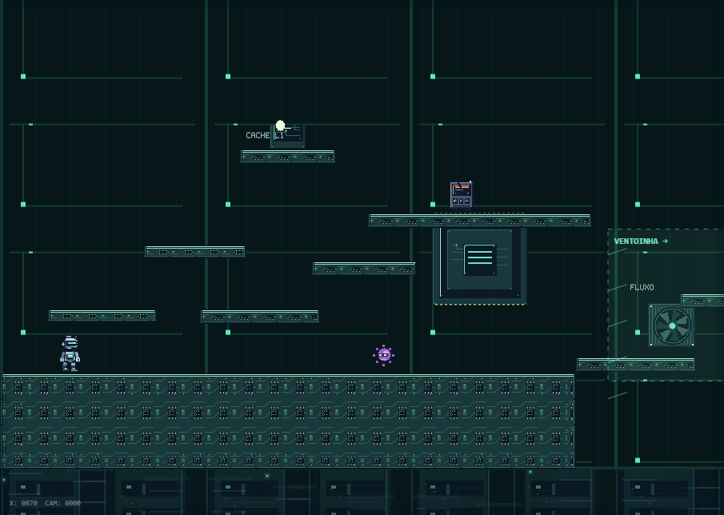
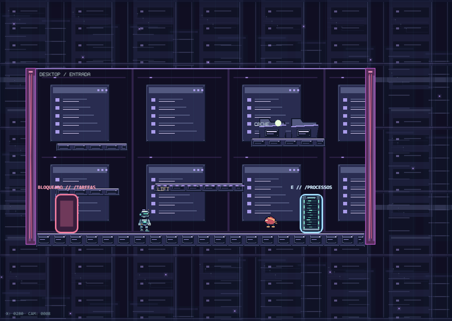
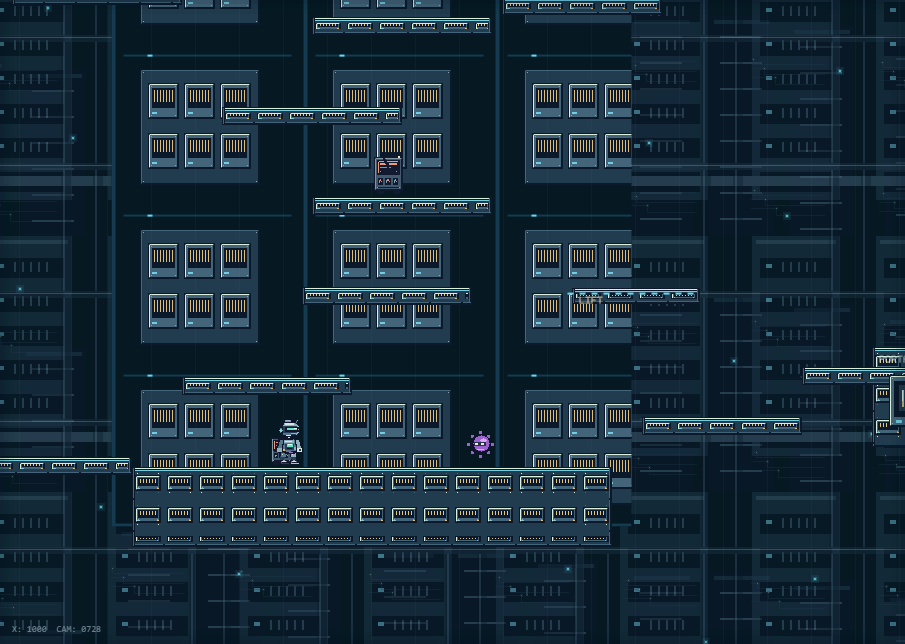
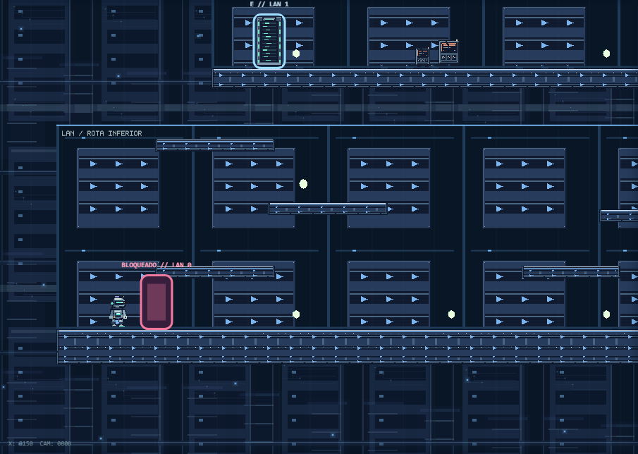
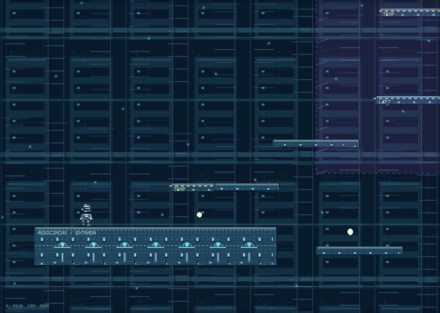
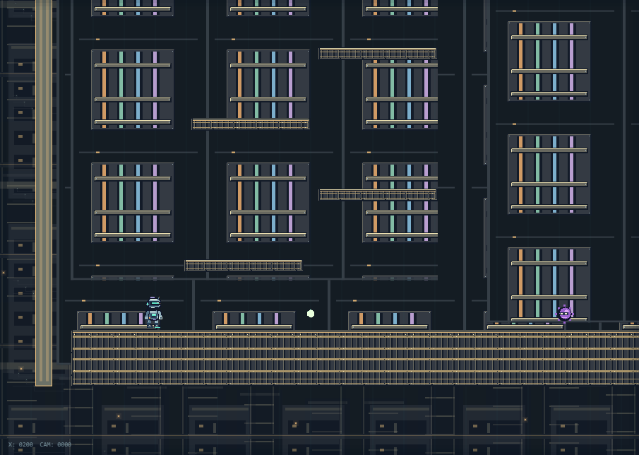
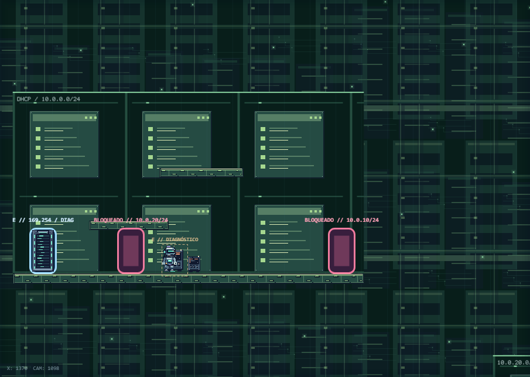
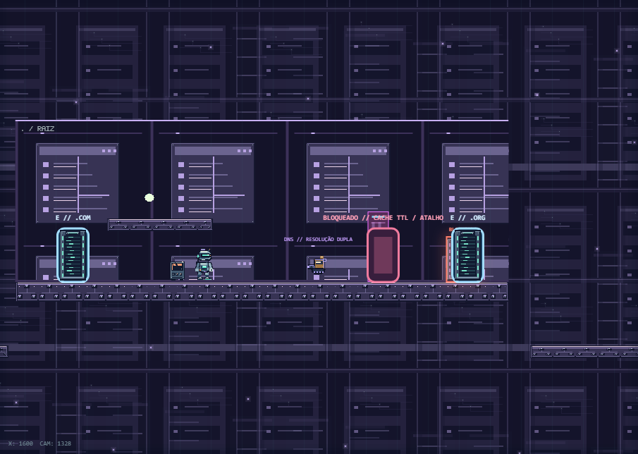
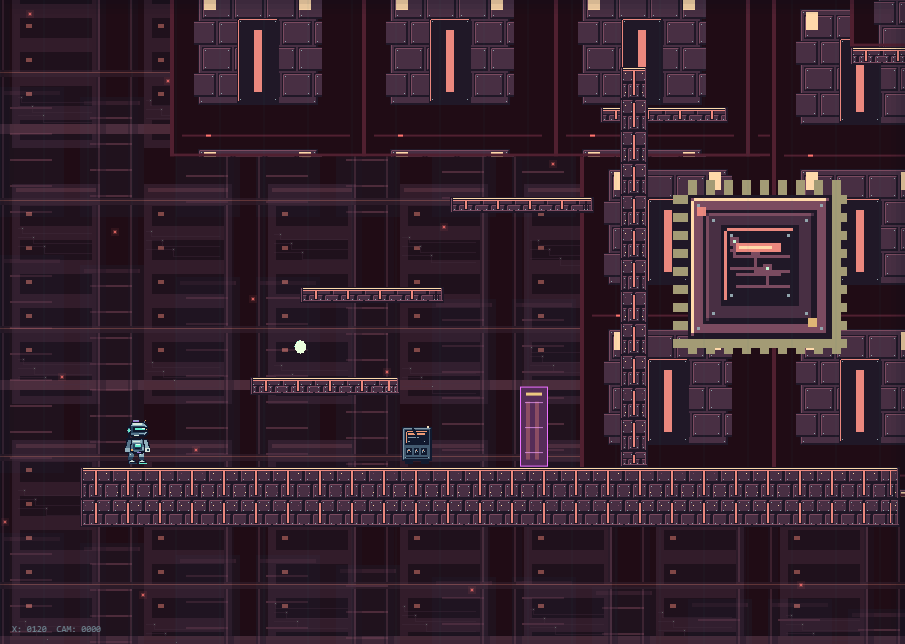
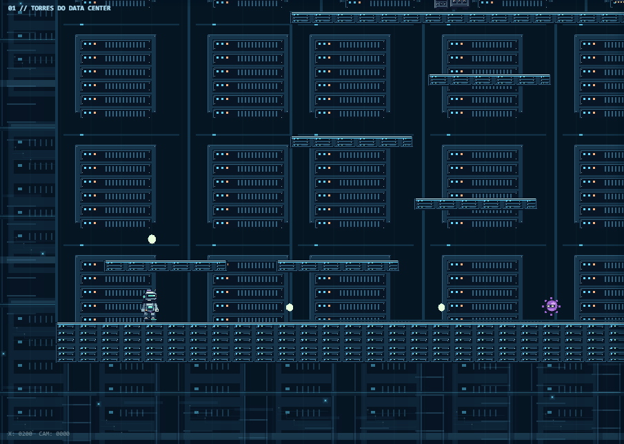
PNGs originais, autotiling, tr?s planos de parallax e detalhes por tema. Capturas no canvas real, fora do fade de entrada. A geometria de colis?o permanece intacta.
Arquitetura, arquivos e valida??o
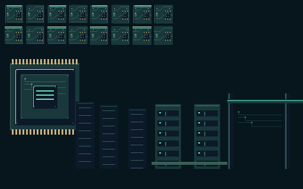









